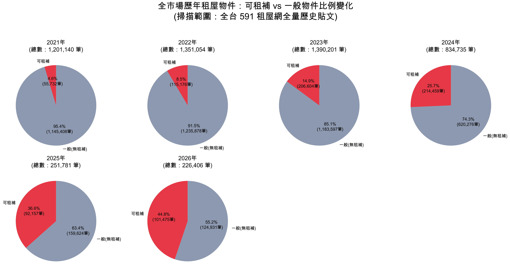
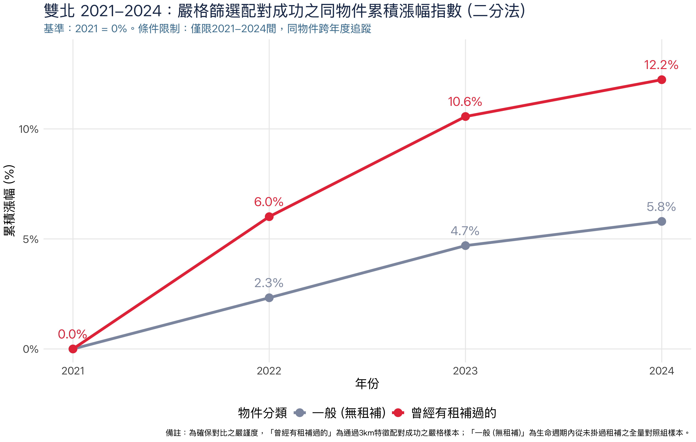
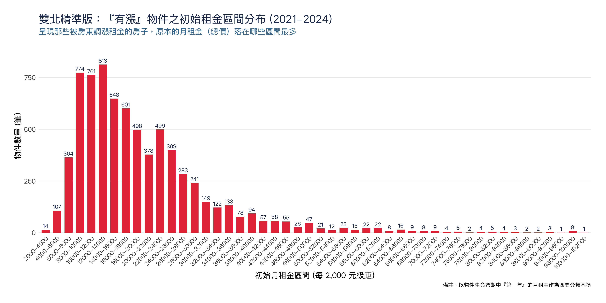

3公里空間配對法
先找出標示可申請租金補貼的物件，再於同一街廓或方圓3公里內，尋找房型、面積帶、裝潢程度、生活機能與近捷運條件相近的一般物件作為對照組。
資料新聞互動版
當租金補貼進入供不應求、資訊不透明的租屋市場，補貼不只減輕租客負擔，也可能成為房東重新計算租金、稅負與出租效率的依據。
「有了租屋補助，許多人條件可以提高，不再拘束於距離較遠或生活機能較差，不過租金相對便宜之地點。」租齡8年的上班族珍妮（化名）說。
珍妮目前與朋友合租板橋府中站附近的三房，月租18,500元，台水台電。離捷運近，生活機能也方便。她第一次申請租屋補助時，原本擔心房東拒絕，沒想到房東很快同意，流程也順利。對她來說，租補是每個月能實際減輕壓力的一筆錢。
「300億元中央擴大租金補貼專案計畫」最初於2022年7月3日正式上路。根據內政部住宅資訊統計彙報，2024年底中央擴大租金補貼專案補貼戶數達706,552戶，較2023年底增加29.57%。租補規模逐漸擴大，已成為租屋市場中不能忽略的變項。
問題是，當補貼進入一個供不應求、資訊不透明的市場，這筆錢最後如何被分配？它減輕了多少租客負擔，又在多大程度上被市場價格吸收？
政策進場
從591租屋網全市場歷年租屋物件觀察，標示可申請租金補貼的物件比例從2021年的4.6%，上升到2026年的44.8%。租補逐漸從例外條件，變成租屋市場中的常見標籤。

對租客而言，「能不能租補」影響實際負擔與租房意願；對房東而言，是否接受租補牽涉稅務、出租效率與物件競爭力。當這個條件被放進市場，租補成為了房東與房客重新計算租金的依據。
漲幅差距
記者爬梳591租屋網2021至2024年雙北上架資料，追蹤能夠跨年度辨識為同一物件的租金變化，並透過方圓3公里內空間與特徵配對，排除地段、房型、屋況與新成屋等干擾因素。
從未標示租金補貼的一般物件共追蹤96,093間，四年累積漲幅為5.8%；曾標示可租補、並通過空間與特徵配對的物件共追蹤14,528間，四年累積漲幅為12.2%。
也就是說，在同物件追蹤與3公里配對雙重驗證後，曾標示可租補物件的租金漲幅約為一般物件的2.1倍。這組數據顯示，租補標籤不是單純的刊登資訊，而是進入租屋市場後，推動部分物件租金成長的重要因素。

「過去的經驗是，（房東）時時刻刻有機會都會試著想把房租的租金提高。」崔媽媽基金會執行長呂秉宜說。
呂秉宜認為，雙北租金本來就處於全面上升的市場中，供需不平衡、房價上升、稅負與物價都會成為房東調整租金的理由。但租補擴大後，房客可領取補助，也讓部分房東認為租客支付能力提高，進而把補助納入定價考量。
他觀察，房價上升使部分原本可能買房的族群延後進場，繼續留在租屋市場。而這些租客負擔能力較高，會往中端屋源移動，接著擠壓年輕人與弱勢家庭原本可負擔的物件。社會住宅供給有限，市場屋源增加速度又跟不上需求，房客在議價時更容易處於弱勢。
通勤廊帶
租補物件的租金成長不只出現在單一行政區，而是沿著雙北捷運線與通勤廊帶擴散。從空間分布來看，高漲幅物件多集中在捷運站周邊、轉乘節點與生活機能成熟區域，並逐漸從台北市核心區向新北通勤圈外圍延伸。
這樣的分布顯示，租補進場後，集中在租客本來就競爭激烈的區位。捷運、公車、學區與商圈，使物件更容易出租；當租客因租補提高可負擔金額，這些交通便利的房源也更容易被重新定價。
呂秉宜指出，租屋族的「硬道理」是通勤時間能否掌握。相較於買房族可能用更長通勤換取較低房價，租屋族更重視上學、上班能否在可接受時間內抵達。因此，捷運與公車可及性，會直接影響租屋需求與租金競爭力。
對房東而言，交通便利也是定價依據。房地產公司創辦人黃先生（化名）管理近50間物件，主要出租給學生與上班族，房源分布在中永和、板橋、松山、大安、文山等雙北區域。他選物件時，多半找捷運站步行約十分鐘內、生活機能較完整的地點。定價時，他看投報率，也看周邊行情；交通方便、靠近學區、屋況整理過，都是讓物件更好出租、也更有條件調整租金的因素。
租金帶
從出現租金上升的物件來看，調整件數主要集中在8,000至18,000元租金帶。這個價格帶多屬雙北中低價位的小坪數物件，可能是分租套房、小套房，或是雅房。對學生、初入職場者、單身上班族或預算有限的租客而言，這類物件往往是可負擔範圍內的熱門選項。

進一步比對8,000至18,000元區間的物件條件，最常出現在漲租名單中的，是獨立套房，且多具備近捷運、裝潢程度較佳、不可養寵等條件。件數最多的組合包括「獨立套房＋精裝＋近捷運＋無電梯＋不可寵」、「獨立套房＋精裝＋近捷運＋有電梯＋不可寵」，以及「獨立套房＋中檔裝潢＋近捷運＋無電梯＋不可寵」。
呂秉宜指出，近年租客對居住品質與隱私的要求提高，分租雅房因需共用衛浴，除弱勢家庭與剛出社會、經濟狀況較有限的年輕人外，通常較不容易被選擇。「現在的話，至少都是小套房，至少也是一個獨立衛浴，甚至是獨立套房以上的房子會是比較競爭的狀況。」他說。
呂秉宜補充，獨立套房與小套房之所以需求較高，是因為它介於租金價格與居住品質之間，成為許多租客能接受的「公約數」。
這些組合顯示，最容易被調整租金的，往往不是市場邊緣物件，而是原本就位在租屋主流需求帶的房源。它們總價仍落在上班族、學生較常承租的範圍內，又具備交通便利、基本裝潢完整等條件，因此最容易在租補進場後被房東重新定價。
如果把觀察焦點從「有漲件數」改成「漲幅高低」，答案則明顯不同。從2,000至18,000元區間來看，漲幅最高的組合多集中在整層住家，包括「整層住家＋中檔裝潢＋非捷運＋有電梯＋不可寵」、「整層住家＋精裝＋非捷運＋有電梯＋不可寵」，以及「整層住家＋中檔裝潢＋近捷運＋無電梯＋不可寵」。
這表示，若說獨立套房是最常被調整租金的物件，整層住家則是一旦調整，幅度最容易拉大的類型。整層住家本身總租金較高、空間條件較完整，也更容易因重新裝修、家具更新或經營方式改變，而出現較大的價格跳升。
這點也與黃先生的觀察互相呼應。黃先生提到，近年包租代管與二房東模式興起，改變了部分物件的租金結構。他將這波產業變化，連結到柯文哲2014年當選台北市長後提出「合法二房東」概念，使過去較常被視為灰色地帶的轉租模式，逐漸走向制度化與公司化經營。
若從政府制度來看，台北市的社會住宅包租代管則是在2017年進入實際運作階段；臺北市政府資料顯示，2017年市府依「106年度社會住宅包租代管試辦計畫」評選租屋服務業者協助辦理，讓民間業者以包租、代管方式投入租屋媒合與管理。
對黃先生而言，這類模式讓舊屋重新整理後再出租變得更常見。過去由屋主直租的老屋，租金可能較低；但若由包租業者承租後重新整理、分租，再以套房、雅房或合租形式出租，總租金可能明顯提高。黃先生也是依照這套商業模式，買或租下整層住家，進行翻新後出租，藉此賺得利潤。他舉例，有些案件過去向原屋主承租約1萬8,000元，翻修後再出租，可達3萬2,000元左右。
關於租補是否影響定價，作為投資客的黃先生坦言，出租最終仍會回到成本與利益計算。
政府如果要課租屋所得稅，我就是把稅加在租客身上，真的有良心的就會自己多出一點。沒良心的、就是想賺錢為主的就是把它加給租客。 黃先生分享道。
租金不是只反映房屋本身條件，也反映房東對稅負、空租、投報率與租客支付能力的計算。租補進入市場後，當租客支付能力被提高，房東也更可能重新評估租金。
租客取捨
租補進入市場後，租客不一定只追求「能補」。對不同人來說，租補只是找房時的一項條件，還要和租金、交通、房型與生活品質一起計算。
從大學開始租屋至今八年的上班族小木（化名），八年間住過七個地方，幾乎每年都在搬家。她目前住在文山區一間約10坪的頂樓加蓋大套房，月租1萬元。因為物件屬於違法建築，不能申請租補，房東也在簽約前就口頭告知，若能接受再簽約。
小木仍然選擇承租，因為空間、交通與租金都在可接受範圍內。
租補對我來說是加分，但不一定是必要。 小木，租客
她觀察，不能申請租補的房子，有時反而租金較低，可能是頂樓加蓋、隔間較複雜，或房東擔心稅務與建物狀態被查。這些物件不一定理想，卻可能讓租客用較低價格換到空間或地點。
小木現在住的頂樓加蓋套房，夏天熱、冬天冷，但空間較大，通勤方便。她提到，熱了就開冷氣，冷了就多蓋被子。這不是沒有委屈，而是租客在有限預算裡的現實選擇。
對小木而言，最難妥協的是交通。她曾經住過可以申請租補、但通勤近兩小時的物件。舟車勞頓的生活讓她感到疲憊，也讓她逐漸意識到，租金之外，通勤時間同樣會影響生活品質。因此，她後來轉向選擇交通方便、離上班地點較近的物件，即使不能申請租補，綜合考量下仍更具吸引力。
小木的選擇並非個案。珍妮也有相似的取捨經驗。她初入社會後，曾希望透過政府補助節省開支，查詢資料後詢問房東，當時房東很快同意，申請流程也透明簡便，讓她對租補制度留下正面印象。
不過，珍妮現在承租的房子同樣不能申請租補。這間位於板橋府中站附近的三房，月租18,500元，屬於頂樓加蓋物件。即使不能租補，她仍選擇承租，主要是因為租金相對便宜、交通方便，且生活機能符合需求。
另一位租客薇安（化名）則住在同一間套房十年。這間約5坪的套房，月租從一開始的7,700元調整到現在8,000元，電費另計。房東告訴她，租金調整原因是通貨膨脹，並非租補。
薇安因租期橫跨租補政策上路，被房東因稅務原因漲租，房東在合約中寫明，若要申請租補，所得稅10%需由房客自行負擔。她評估扣除自付部分後仍有補助效果，因此仍選擇申請。
三位租客對租補的態度並不相同，但都肯定租補確實能減輕租金壓力。珍妮支持租補制度，認為它能解決許多租客面臨的租金問題，也讓租客不必只選擇距離較遠、生活機能較差但租金較便宜的地點。薇安也認為，租補政策本身是好的，對有需求的人確實有幫助。
但租補帶來的幫助，並不代表租客就能無條件受益。珍妮觀察，隨著租補越來越普及，市場上可申請租補的物件似乎更容易調整租金。她本人沒有遇過房東因租補而漲租，但常聽到身邊有人因想申請租補，被房東要求提高租金。她也注意到，不少房東仍不願讓房客申請，即使政府資料顯示房東可能透過公益出租人取得部分稅務優惠，仍有人不願理解或不願如實申報。
薇安的經驗則凸顯另一個問題，房東因租補增加的稅，可能轉嫁給租客。她希望制度能更清楚透明，尤其是房東因租補產生的稅務成本，是否可能轉嫁給租客？或房東能否透過其他方式減稅？都應該讓租客更容易理解。
從三位租客的經驗來看，租補確實提高了部分租客的支付能力，也讓他們有機會選擇交通更方便、生活機能更好的物件；但在租屋市場供給不足、資訊不透明的情況下，這筆補助也可能被房東重新納入租金與稅務計算。
同一項政策，到了不同租客手中，變成不同的計算題。
房東計算
「有租補對我出租來說其實更有效率。」黃先生說。
他管理近50間物件，主要出租給學生與上班族。現在租客看房，九成會先問能不能申請租補，甚至有人會問能不能雙租補。
對黃先生而言，租補不是麻煩，而是縮短空租期的條件。房子空一天就是成本，若可以讓租客申請租補，成交率較高，空租時間也較短。他也提到，公益出租人有每月1萬5,000元免稅額等稅務優惠，對他來說並非壞事。
但市場價格也會彼此帶動。黃先生承認，市場上可能有人因為租補而把租金拉高。他解釋，租金的定價會先計算成本與報酬率，若租金已達到可接受的投資效益，就不會再特別往上加價。但當租屋網站上出現條件普通、開價卻偏高的物件，附近房東參考行情後，也可能跟著調整租金。
真正讓他困擾的是二房東案件。有些原屋主不希望租客申請租補，原因多與自用住宅稅率、房屋稅、未來出售時的稅負，或過去出租未申報有關。若租客堅持申請，黃先生夾在租客與原屋主之間，便可能產生爭執。
他說，若是自己買的房子，通常都可以讓租客申請；但若是向屋主承租後再轉租的物件，原屋主不一定同意。這也讓租補制度在實際市場中遇到複雜的租賃關係：房客面對的是二房東，但真正擔心稅務曝光的，可能是背後的原屋主。
從黃先生的經驗來看，租補對房東而言同時是誘因，也是成本計算。它讓房子更好出租，卻也牽動稅務、申報與原屋主態度。當市場供給不足、租客選擇有限，這些成本與風險便可能被重新放進租金裡，成為房東調整價格的一部分。
制度深水區
呂秉宜認為，租金補貼本來就是各國常見的住宅政策工具。對租屋族而言，它可以提高負擔能力與市場競爭力。問題不在於補貼本身，而在於補貼進入什麼樣的市場。
在台灣，租屋市場長期存在地下化與資訊不透明問題。許多房東以自用住宅名義持有房屋，實際出租卻不願讓租客報稅或申請補助。政府和學界也難以掌握完整租金行情，租客找房時只能依靠租屋平台、朋友經驗或房東說法判斷價格是否合理。
呂秉宜指出，如果租賃資訊透明，政府可以更精準掌握租金行情，也能透過稅收與補貼進行資源分配。租客也能有更客觀的價格依據，在面對房東調漲時，不至於完全依賴個人判斷。但在租屋黑市龐大的情況下，補貼政策的效果會打折，甚至更容易被市場吸收，讓租金成長更加明顯。
他認為，政府不能只發補貼，而要面對租屋市場的「深水區」，也就是房東租屋黑市不透明的問題。租補與包租代管都高度依賴既有租屋市場，若市場本身不透明、供給不足，政策效果就容易受限。
更深層來看，呂秉宜認為，台灣長期以買房作為居住目標，使租屋被視為買房前的過渡階段，也讓租客權利長期被忽視。相較於德國等以長期租屋為常態的社會，台灣租客更容易把租屋處境理解成短期忍耐，而不是需要被保障的居住權利。
台灣租屋市場有一個非常重要的現象叫做「過渡」，它只是一個過程的過渡。那因為過渡產生了下一個作為叫做「將就」，就是忍著、忍著，將就一下、忍一下，等到買房後，一切問題就解決了。 呂秉宜，崔媽媽基金會執行長
在這樣的租屋文化下，租客面對漲租、搬遷壓力或房東拒絕申請租補時，往往缺乏談判空間，也不容易形成集體要求市場透明的力量。補貼進入市場後，若租賃關係仍維持在不透明、租客只能將就的狀態，政策原本要補給租客的資源，就可能被房東、稅務成本或市場價格重新分配。
要讓補貼真正回到租客身上，呂秉宜主張，政府必須同時處理資訊透明與供給不足。他提出「胡蘿蔔跟棍棒並行」策略，「不是一味地懲罰房東，而是給房東有一些誘因，讓他願意如實揭露。」首先，是讓租屋市場逐步浮上檯面，透過誘因與查核並行，降低房東如實申報的疑慮；再者，是增加穩定租屋供給，包括持續興建社會住宅，或利用公有土地鼓勵企業經營出租住宅。
若由政府或企業作為出租主體，租賃關係較容易透明，也較不會出現房東不願報稅、租客不能申請補助的問題。對呂秉宜而言，租補不是不能做，而是不能只做租補。當租金、稅務與租賃關係仍藏在不透明市場裡，補貼進入市場後，就可能被房東重新納入定價。
租金補貼要真正減輕負擔，關鍵在於租屋市場是否健全。只有當租金資訊更透明、出租關係更清楚、租屋供給更穩定，租屋不再只是被迫「過渡」與「將就」的階段，補貼才不會只是追著租金上升，而能成為租客真正可依靠的支持。
資料與研究方法
本報導使用591租屋網爬蟲資料，觀察雙北租屋物件在租金補貼擴大前後的上架租金變化。分析期間以2021至2024年為主，並搭配2018至2026年雙北標示可租補物件比例變化，作為租補標籤進入市場的背景觀察。
本研究關心的問題並非單純比較「可租補物件是否比較貴」，而是進一步追問：當同一間房子開始標示可申請租金補貼後，租金是否出現高於一般物件的成長？為了降低地段、房型、坪數、裝潢、捷運距離與市場供需等因素造成的干擾，本報導共設計三種研究方法，分別從橫向配對、縱向追蹤與雙重驗證三個層次檢驗租金變化，最後以「雙重驗證極限配對法」作為正文主要分析依據。
先找出標示可申請租金補貼的物件，再於同一街廓或方圓3公里內，尋找房型、面積帶、裝潢程度、生活機能與近捷運條件相近的一般物件作為對照組。
使用去識別化房東電話雜湊金鑰，搭配正規化地址、面積、樓層與物件條件，確認跨年度紀錄是否屬於同一實體物件。
結合同物件縱向追蹤與3公里空間配對，直接檢驗租補標籤介入後，相關物件是否出現高於一般物件的租金成長。
本研究以可租補物件租金與周邊一般物件租金中位數相比，計算可租補物件相對於同區域、相似條件物件的租金差異。這個方法可用來觀察：在同樣地理範圍與相似刊登條件下，標示可租補物件是否存在較高租金。
不過，3公里空間配對法仍屬橫向比較。即使控制地點與基本物件條件，仍可能無法完全排除屋內設備、實際屋況、房東經營策略與刊登資訊不完整等因素。因此，本研究進一步採用同物件追蹤方法，觀察同一間房子在不同年份的租金變化。
傳統租金研究多只能比較區域平均租金，但區域平均值容易受到不同物件組成影響，難以判斷個別房源是否真的漲租。因此，本研究嘗試鎖定同一房東名下、同一套房源在不同年份的反覆上架紀錄，進行縱向追蹤。
在有電話欄位的資料中，本研究使用去識別化的房東電話雜湊金鑰，搭配正規化地址，鎖定同一房東名下的同一房源。若資料缺少電話欄位，則改以正規化地址、房屋物理面積、樓層與其他物件條件進行多維度比對，確認跨年度紀錄是否屬於同一實體物件。
此方法的重點，是從「比較不同房子」推進到「追蹤同一間房子」。透過同房東、同物件的歷年租金變化，本研究可以更直接觀察同一房源在2021至2024年間是否調整租金，以及租補標籤出現前後的租金變化。
此方法結合前述兩種方法的優點：一方面追蹤同一間實體房屋在不同年份的租金變化，另一方面再以3公里空間配對尋找條件相近的對照組，避免單一物件追蹤受到新成屋、屋況翻修或區域行情變動影響。
具體而言，本研究先在591租屋網2021至2024年資料中，透過特徵工程鎖定可跨年度追蹤的同一間實體房屋，觀察其反覆上架時的租金變化。接著，針對每間物件，再於同一地理3公里範圍內尋找條件相近的一般物件作為對照組，以排除極端屋況、新成屋上架、單一區域行情波動等干擾。
最後，本研究特別觀察物件在「掛上或拿掉可租補標籤」前後的租金變化，直接檢驗租補標籤介入後，相關物件是否出現高於一般物件的租金成長。換言之，雙重驗證極限配對法並非只看可租補物件是否本來就較貴，而是試圖捕捉租補標籤進入物件生命週期後，對租金調整可能產生的影響。
經資料清理與雙重驗證後，本報導主分析將樣本分為兩組。第一組為「一般物件」，指該物件在所有上架紀錄中，從未標示租金補貼、報稅或社會住宅相關標籤，可視為未受到租補標籤介入的對照組。此組共追蹤96,093間實體房屋。
第二組為「曾標示可租補物件」，指物件生命週期中曾出現租金補貼標籤，且通過方圓3公里內空間與特徵配對驗證的樣本。此組共追蹤14,528間實體房屋。
以2021年租金為基準觀察四年累積漲幅，從未標示租補的一般物件，2024年累積漲幅為5.8%；曾標示可租補的物件，累積漲幅為12.2%。也就是說，在同物件追蹤與3公里空間配對雙重驗證後，曾標示可租補物件的租金漲幅約為一般物件的2.1倍。
這項結果顯示，在盡可能排除地段、房型、面積、裝潢、近捷運條件與新成屋等因素後，租補標籤介入後的物件，仍出現明顯高於一般物件的租金成長。這支持本報導的核心判斷：租金補貼進入市場後，可能不只減輕租客負擔，也可能透過提高租客支付能力、改變房東定價預期，推動部分物件租金上升。
591租屋網資料為上架租金，不等於實際成交租金；平台上的「可租補」標示，不等於租客實際申請或領取補助；房東或刊登者標示的裝潢程度可能與實際屋況有落差。即使經過同物件追蹤與3公里空間配對，仍無法完全觀察屋內設備更新、實際翻修成本、房東個別決策與租客實際申請結果。
本文不主張租金補貼是雙北租金上升的唯一原因。通貨膨脹、房價上升、捷運與生活機能、屋況翻修、包租代管興起，以及整體租屋供需緊繃，都可能同時影響租金。
不過，本文的研究設計並非單純描述市場現象，而是透過同物件追蹤與空間配對，盡可能排除多項干擾因素後，觀察租補標籤介入前後的租金變化。雙重驗證結果顯示，曾標示可租補物件的漲幅明顯高於一般物件，支持「租屋補助可能推動部分物件租金上升」的判斷。